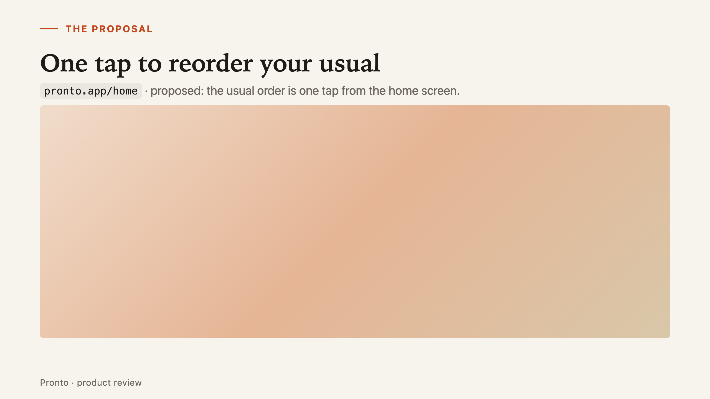
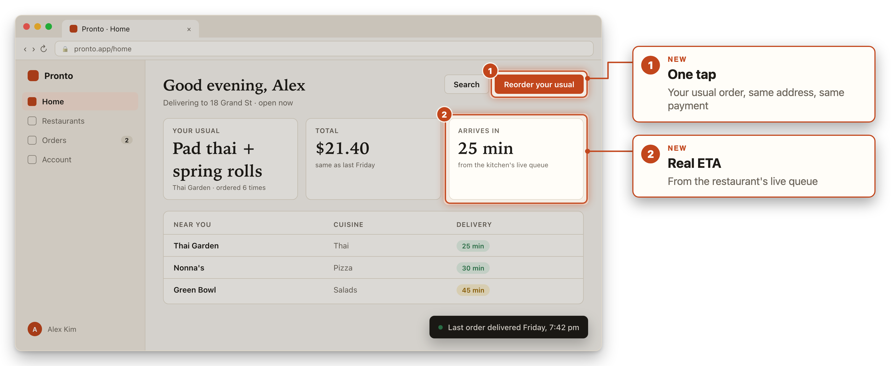
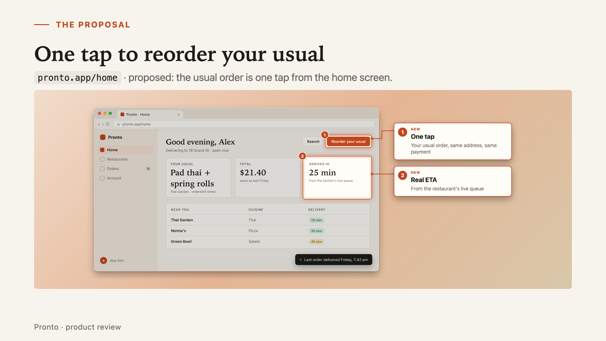

You prompt. Your agent writes two plain-text files. deck-kit renders them and puts them together.
<!-- _class: mockup --> ## One tap to reorder your usual  <!-- Speaker notes: Most orders repeat a past one. Today that's 4 steps; this makes it one tap. -->
kind: web title: Good evening, Alex button*: Reorder your usual stats: Your usual | Pad thai ¦ … Arrives in | 25 min annotate: frame: button#2 | One tap


